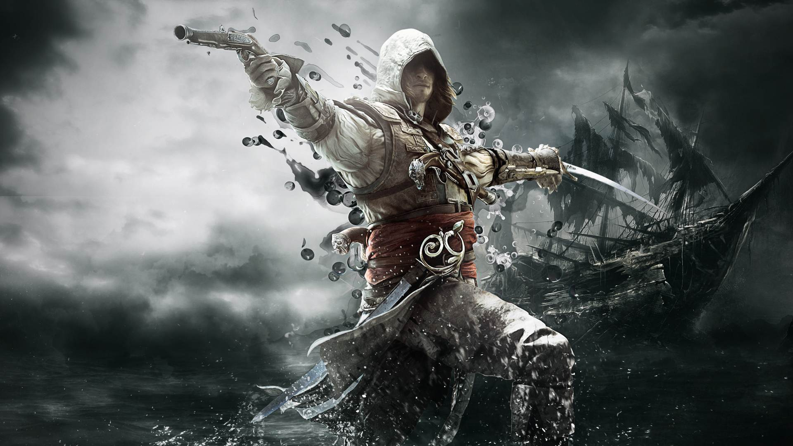

Assassin's Creed este o serie de jocuri video de acțiune-aventură și stealth, creată de Patrice Désilets, Jade Raymond și Corey May, dezvoltată și publicată de Ubisoft, folosind motorul grafic Anvil Next. Relatează conflictul etern dintre Asasini, care luptă pentru pace prin liber-arbitru, și Templieri, care doresc pace prin control. Jocurile conțin elemente de istorie ficțională, science fiction și personaje, combinate cu evenimente istorice și persoane din viața reală. În majoritatea poveștilor, jucătorii controlează un Asasin dintr-o perioadă istorică, iar în prezent, îl controlează pe Desmond Miles sau un Inițiat Asasin, care vânează inamici templieri. Seria s-a inspirat din romanul Alamut al scriitorului slovac Vladimir Bartol, dar are la bază și concepte din seria Prince of Persia.
Primul joc, cu titlu omonim, a fost lansat în 2007, iar ramura principală conține unsprezece jocuri. Cel mai recent titlu este Assassin's Creed Valhalla, lansat în 2020. O poveste și o perioadă nouă sunt introduse în fiecare joc, iar unele elemente de gameplay din jocul precedent sunt îmbunătățite. Există trei arcuri narative în serie. Pentru primele cinci jocuri din serie, cadrul din prezent are loc în 2012 și îl conține pe protagonistul Desmond Miles ce folosește un dispozitiv numit Animus și retrăiește amintirile strămoșilor săi pentru a evita apocalipsa din 2012. În jocurile premergătoare lui Assassin's Creed Syndicate, angajații Abstergo și inițiații Asasini au înregistrat amintirile genetice folosind software Helix, ajutând Templierii și Asasinii să găsească noi Piese ale Edenului în lumea modernă. Ultimele trei jocuri lansate, Assassin's Creed Origins, Assassin's Creed Odyssey și Assassin's Creed Valhalla se concentrează pe fosta angajată Abstergo, Layla Hassan.
Jocurile principale din seria Assassin's Creed au fost primite, în general, cu recenzii majoritar favorabile, fiind lăudate grafica, designul jocului și povestea, fiind însă criticate ciclul de lansare anual și bugurile frecvente. Jocurile spin-off au primit recenzii mixte spre pozitive. Seria a fost distinsă cu nominalizări și premii multiple, inclusiv cu cele de Joc al Anului. Este o serie de succes și pe plan comercial, fiind vândută în peste 155 milioane de copii (până în octombrie 2020), devenind cea mai profitabilă franciză a celor de la Ubisoft și una dintre cele mai profitabile serii de jocuri video din toate timpurile. Assassin's Creed a fost adaptat într-un film cu titlu omonim, care a fost primit cu recenzii negative. Au fost publicate enciclopedii, benzi desenate și romane bazate pe serie. Toate materialele media au loc pe același fir narativ cu jocurile din seria principală.
